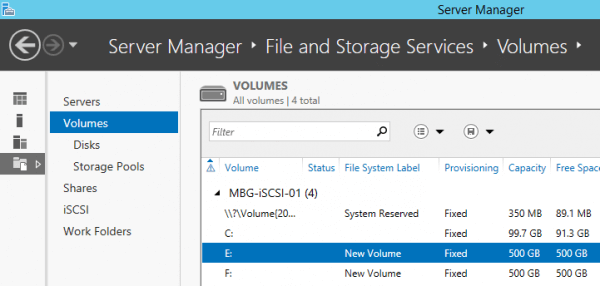

Configure ISCSI SAN in WServer 2012 R2
"ISCSI (Internet Small Computer System Interface) is a protocol that uses underlying TCP/IP protocol for transmission of data. Unlike FC (Fiber Channel) which requires dedicated hardware like HBAs (Host Bus Adapters), fiber optics, etc., iSCSI uses existing network devices (routers, switches, firewalls) making it very cost effective storage solution. In iSCSI, data is transferred in block by block in raw form between the host and SAN. This makes operating systems to think as if the disk is locally connected or DAS (Direct Attached Storage). You can create LUNs (Logian Unit Numbers) or virtual disks in SAN which will be used by operating systems as a volume as if they were DAS. Note, NAS (Network Attached Storage) uses protocols like SMB, CIFS, or NFS to transfer data between operating systems and NAS device. In this post, I will show steps to configure iSCSI SAN in Server 2012 R2."
Step 1
From the server manager, click manage and click "Add Roles and Features".
{kind=link}
Step 2
Click next on "Before you begin page".
Step 3
On select installation type page, select "Role-based" or "Feature-based installation" and click next button.
{kind=link}
Step 4
On select destination server option, choose select a server from the server pool option and select the server. Click Next.
{kind=link}
Step 5
On the select server roles page, expand "File and Storage Services" role, and again expand "File and ISCSI Services" feature, now select ISVSI Target Server feature. Then click next.

Step 6
On features page, click next without checking any feature.
Step 7
Review the confirmation page and click "Install" button.
Step 8
ISCSI target service successfully installed in the servre. We need now the create a virtual disk. To bring the disk online, go to "Server Manager", click "File and Storage services" tab, select disk tab again, here you will see the lists of disks. Now right-click the disk and click "Bring online". Repeat step for each disks. A warning just appear after clicking on "Bring online", read it and click "Yes".
{kind=link}
{kind=link}
Now create volumes in these disks. From the same window, right-click the disk and click "New Volume".
{kind=link}
New volume wizard will pop up. Click next on before you begin page. Choose the server and disk and click next.
{kind=link}
Click "OK" on the warning.

Assign drive letter to the new volume and click next.
{kind=link}
Select file system and click "Next".
{kind=link}
Review the confirmation page and click "Create".
{kind=link}
Repeat the same step for other disk to create another volume. To review the volumes, click "Volumes" tab.

{kind=link}
Now the volumes are ready to be configured virtual disks. Now the last step is to create vortial disks. In the "Server Manager", select "File and storage services" tab and then click ISCSI tab. Click "Tasks" and select "New ISCSI Virtual Disk".
{kind=link}
New ISCSI virtual diskd wizard will open. Here, select the server and select volume and click "Next".
{kind=link}
Type name of the virtual disk.
{kind=link}
Specifiy the virtual disk size. Choose the disk type. Click "Next".
{kind=link}
In the "Assign ISCSI target" page, choose "New ISCSI Target" option and click "Next".
{kind=link}
Type the name for the new target.
{kind=link}
Here you can see the lists of ISCSI initiators. To add other ISCSI initiators, click "Add" and repeat the steps above. Then click "Next".
{kind=link}
In the "Enable Authentification" page, you have option to use CHAP or reverse CHAP for authenticating ISCSI initiators and ISCSI target. If we don't need high security system, you can let them empty and click "Next".
{kind=link}
No< review the configuration and click "Create" to create a new virtual disk.
{kind=link}
After the installation, you can view the virtual disks in ISCSI tabs.
{kind=link}